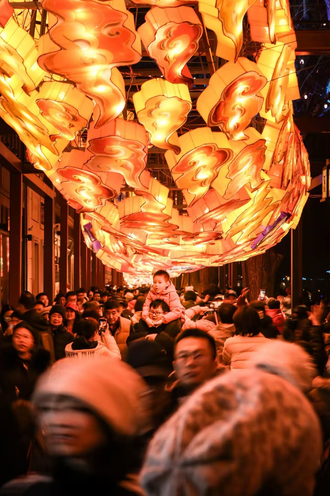

庙会是老北京春节期间最热闹的活动，是北京过年的重要习俗。北京的庙会历史悠久，最早可以追溯到辽代，明清时期达到鼎盛。每年春节期间，各大寺庙周边都会举办庙会，人们逛庙会、烧香祈福、看杂耍、吃小吃、买年货，热闹非凡。
北京最著名的庙会有地坛庙会、龙潭湖庙会、厂甸庙会、白云观庙会等。庙会上有各种老北京传统表演，比如舞龙舞狮、踩高跷、扭秧歌、耍中幡、拉洋片、捏面人、吹糖人，还有各种北京特色小吃，糖葫芦、驴打滚、艾窝窝、爆肚、灌肠，应有尽有。
厂甸庙会是北京历史上最早、最有名的庙会，每年春节期间，琉璃厂一带人山人海，卖字画的、卖古玩的、卖风筝的、卖空竹的，充满了老北京的文化气息。地坛庙会则是最有年味的庙会，仿清祭地表演是地坛庙会的保留节目，仿佛让人穿越回了清朝。过年逛庙会，才能真正感受到老北京的年味儿。
著名庙会：地坛庙会、龙潭湖庙会、厂甸庙会、白云观庙会
举办时间：一般是春节初一到初七
特色：传统表演、特色小吃、年货集市，充满年味儿